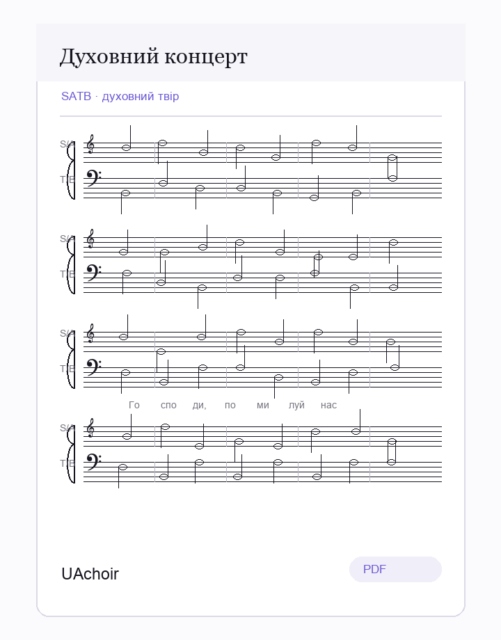
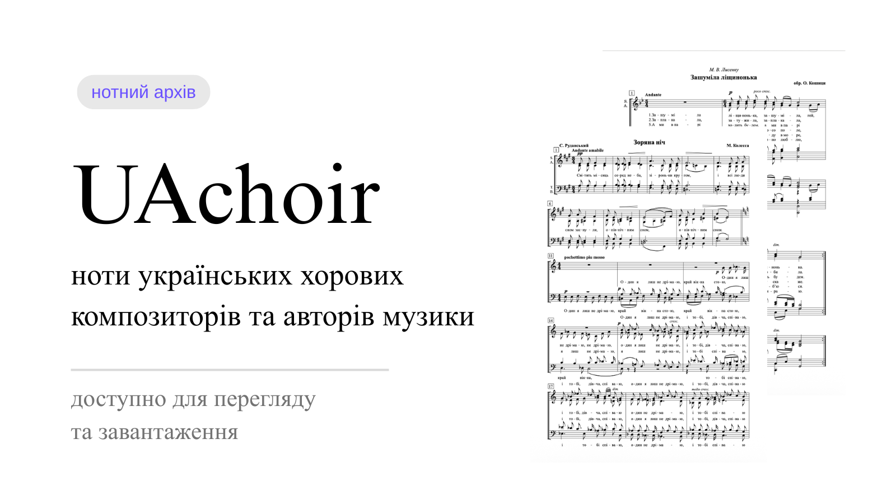
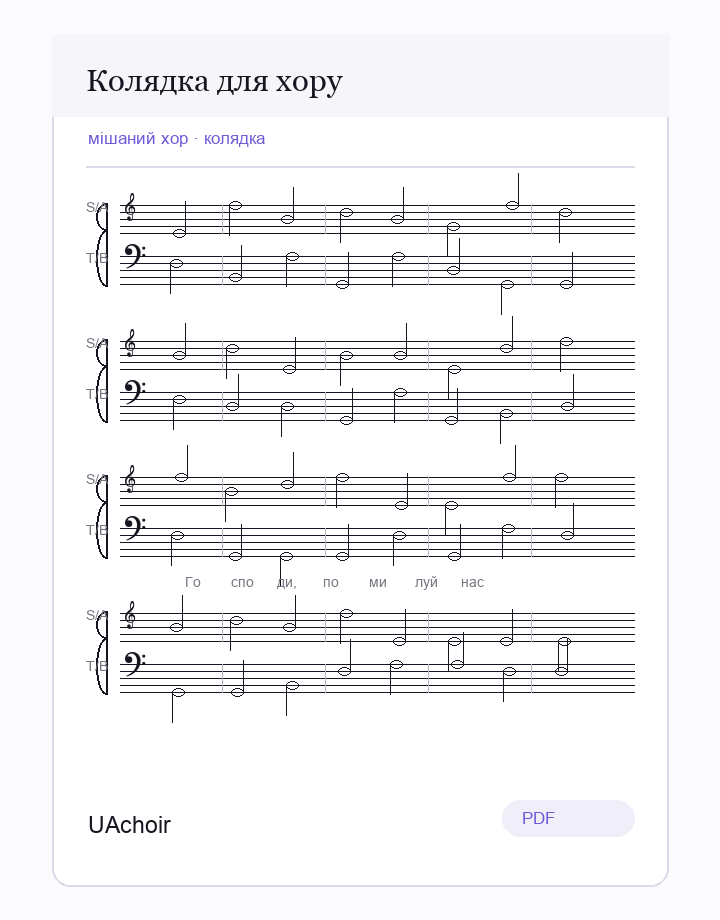
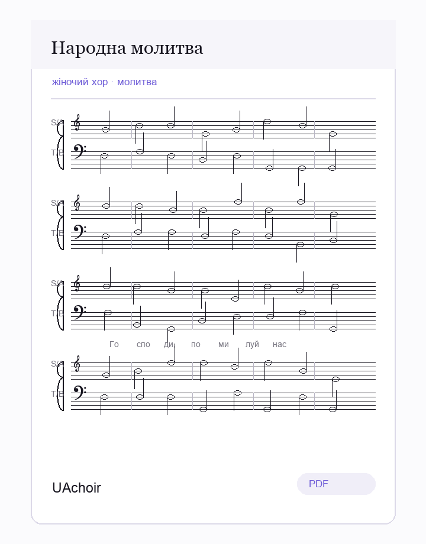
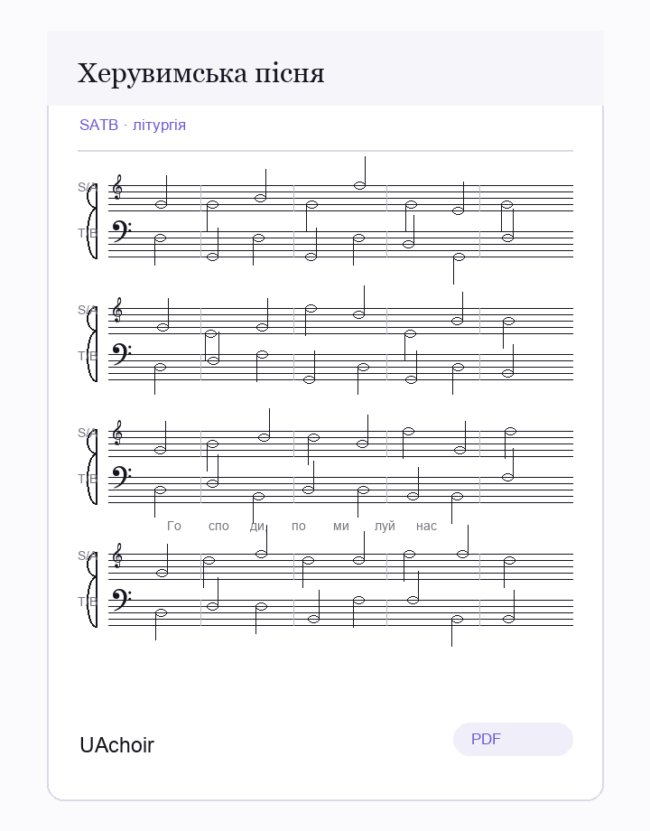
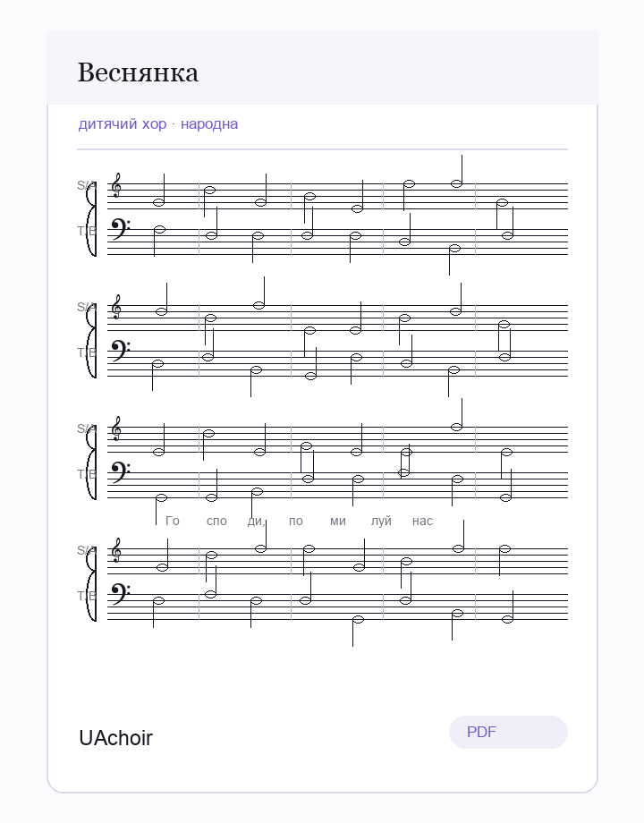
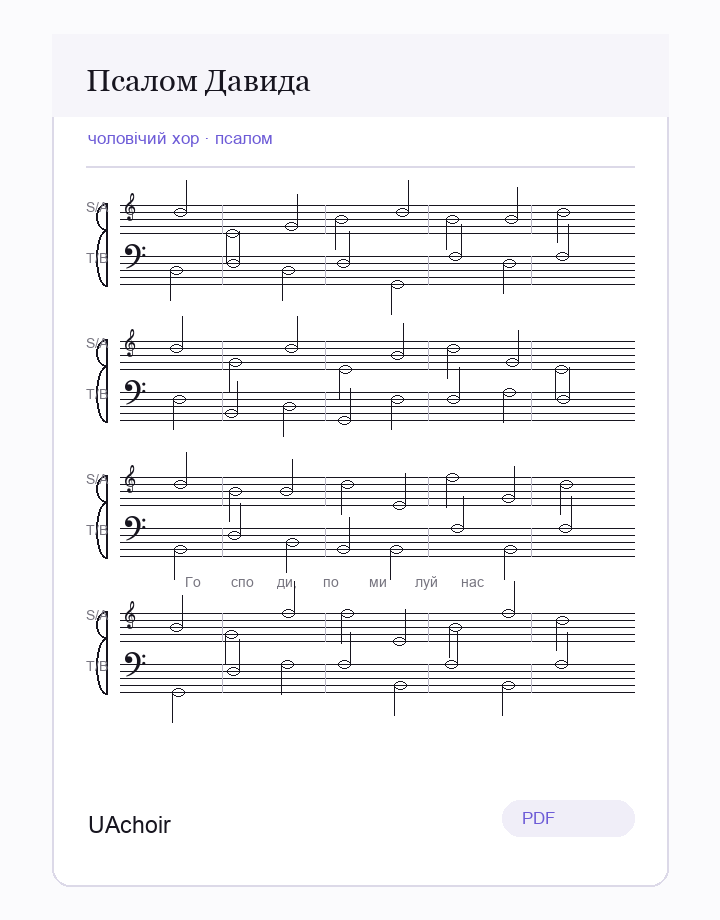

SATB · духовний твір
Духовний концерт
Короткий опис партитури, склад хору й швидкі дії для перегляду.
Нотний простір для хорів
Запрошуємо вас презентувати, переглядати й завантажувати ноти українських духовних, народних і авторських хорових творів.

Вітаємо
Цей проект задуманий як відкрита й акуратна збірка української хорової музики. На головній сторінці можна показувати найважливіші партитури, нові надходження та швидкі переходи до основних розділів.
У наступних версіях сюди легко додати фільтри за складом хору, епохою, жанром, рівнем складності й мовою тексту.
Презентаційні матеріали

SATB · духовний твір
Короткий опис партитури, склад хору й швидкі дії для перегляду.

мішаний хор · колядка
Різдвяний репертуар, обробки народних мелодій і камерні твори.

жіночий хор · молитва
Місце для дати публікації, джерела тексту й рівня складності.

SATB · літургія
Духовна музика для богослужбового й концертного виконання.

дитячий хор · народна
Невеликі твори й обробки для навчального або аматорського хору.

чоловічий хор · псалом
Приклад картки для майбутнього каталогу духовних творів.
Основні сторінки
Новини сайту
Підготовлено структуру для презентації партитур, розділів каталогу й майбутніх новин.
У каталозі можна буде окремо групувати твори за богослужбовим призначенням і складом хору.
Наступний крок - оформити картки композиторів і пов’язати їх із партитурами.